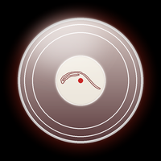
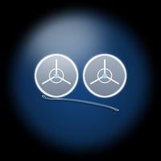
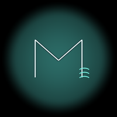

MixerStem D
Four white-and-green quarter arcs are the faders. A red vinyl you can scratch with your finger. A white label that shows the song that's playing.
- 4 stems
- scratch
- tape / FX
- now playing
Four apps on one 466px round watch — a stem mixer, a drum machine, an agent console and a second OS. Wired to your Mac and your phone over one USB cable.
Every app is its own screen with its own job — no menus, no hierarchy. Tap the launcher, the watch becomes the instrument.

MixerFour white-and-green quarter arcs are the faders. A red vinyl you can scratch with your finger. A white label that shows the song that's playing.

Drum machineEight pads, four colour faders, two pointer dials and a tape deck. The 16-step sequencer on the phone drives the same MIDI port.
Live CrewTower sessions on your wrist — app, agent, activity, context bar, project and age. Waiting sessions light up and buzz twice.

Second OSA second firmware on the other OTA slot. Visit mode: Muse clears the boot flag on start, so any power-off goes straight back to Watch.
USB is the spine. The watch talks to the Mac over a serial bridge; the phone talks to the Mac over USB (adb reverse) or Wi-Fi. Everything ends at the same port.
tools/grooved-serial-midi turns G1 … lines into CoreMIDI,
pushes stem/agent data to the watch, and keeps the audio DSP in sync.
USB: adb reverse tcp:8765 tcp:8765. Wi-Fi: start the Mac server with
GROOVED_HOST=0.0.0.0 and enter its IP in the app's LINK tab.
The Mac DSP processes whatever is playing — stems, FX, tape, scratch — and the watch controls it in real time. Phone media shows up on the vinyl label.
Android 8+ · WebView UI · reads the phone's media session for the NOW page.
# phone (USB) adb install -r GrooveD.apk adb reverse tcp:8765 tcp:8765 adb shell am start -n com.cevtuo.grooved/.MainActivity # mac (bridge + audio) tools/grooved.sh # mac (wi-fi instead of usb) GROOVED_HOST=0.0.0.0 deno task dev
NOW page needs notification access: Settings → Notifications → Notification access → Groove D. It reads only the media session, never notification text.
Watch firmware is not in this download — it is built from
device/ and flashed over USB with esptool. See the handoff docs in the source.